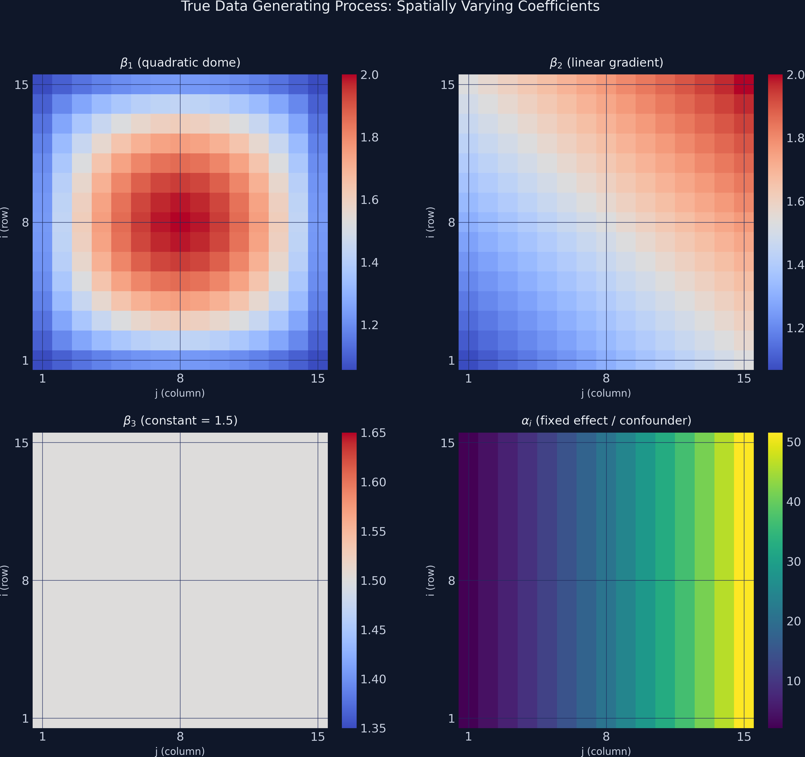
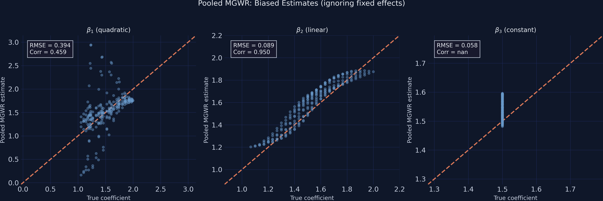
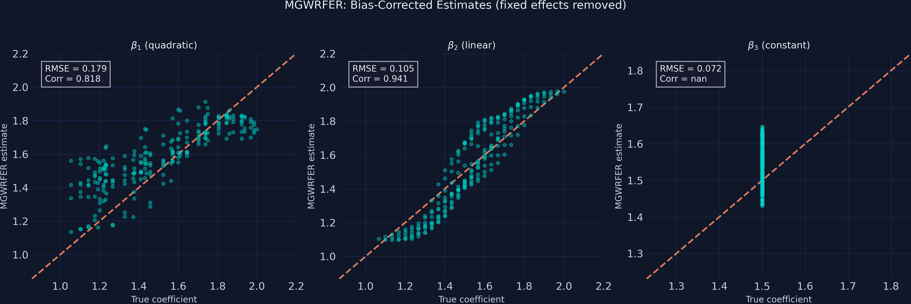
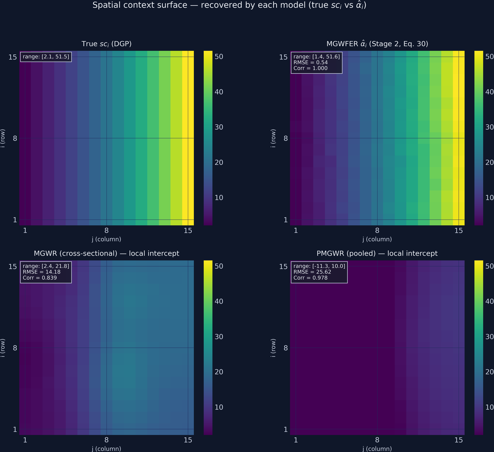
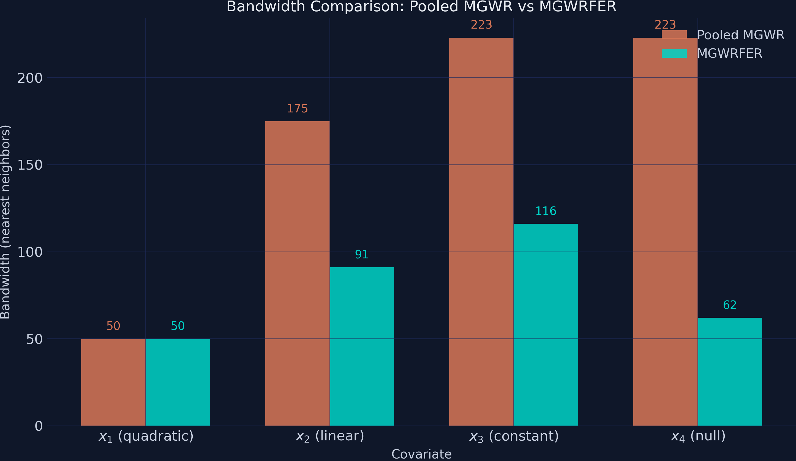

Removing a time-invariant spatial confounder from Multiscale GWR
Nagoya University (GSID)
June 11, 2026
Act I
An unobserved attribute of place shifts the outcome and the covariate levels.
MGWR’s local slopes then absorb that contamination.
What looks like genuine spatial heterogeneity is omitted-variable bias wearing a map. Can we get the real coefficients back?

True coefficient surfaces (\(\beta_1\) dome, \(\beta_2\) gradient, \(\beta_3\) constant) versus the exponential confounder \(\alpha_i\) — which dominates the cross-section by 50× the slope range.
Act II
We simulate the paper’s DGP (Eqs. 39–45) verbatim on a 15×15 grid. The coupling makes the indirect channel \(sc\to x_k\) active — that is the whole point.
| Quantity | Value | Meaning |
|---|---|---|
| \(\mathrm{Cor}(x_k, sc)\) | 0.84 | every covariate tracks place |
| \(\mathrm{Cor}(x_4, y)\) | 0.84 | spurious — \(\beta_4\equiv 0\) |
A regression that does not condition on \(sc\) will read this 0.84 as a real effect. That is the bias mechanism, made concrete.
\[y = \beta_0 + \textstyle\sum_k x_k\beta_k + sc + \varepsilon, \qquad sc = \delta_0 + \textstyle\sum_k x_k\delta_k + \eta\]
\[\Rightarrow\quad y = (\beta_0+\delta_0) + \textstyle\sum_k x_k(\beta_k+\delta_k) + (\varepsilon+\eta)\]
Hide \(sc\) in the error and project it on the covariates: the bias on each slope is exactly \(\delta_k\), the indirect contextual effect.
Only MGWFER inherits the FE estimator’s identification while delivering a location-specific coefficient surface.
| Coefficient | TRUE | Pooled OLS | Individual FE |
|---|---|---|---|
| \(\beta_1\) | 1.50 | 6.14*** | 1.57*** |
| \(\beta_3\) | 1.50 | 5.79*** | 1.55*** |
| \(\beta_4\) | 0.00 | 4.16*** | 0.02 n.s. |
OLS has nowhere to put \(sc\) except into the slopes — Wooldridge’s \(\hat\beta_k=\beta_k+\delta_k\). The within-transform neutralises it.

True vs PMGWR slopes: \(\beta_1\) scatters away from the 45° line and is anti-correlated (\(\mathrm{Cor}=-0.46\)); \(\beta_2,\beta_3\) sit well above identity.
\[\tilde{y}_{it} = y_{it} - \bar{y}_i = \textstyle\sum_k \beta_k(u_i,v_i)\,(x_{k,it}-\bar{x}_{k,i}) + (\varepsilon_{it}-\bar\varepsilon_i)\]
Since \(\alpha_i\) is the same in every period, \(\alpha_i-\alpha_i=0\) — demeaning cancels it to machine precision.
Like zeroing a kitchen scale: subtract the container’s weight (\(\alpha_i\)) so only the contents (the slopes) remain.
Most of the original variation was between units. Demeaning isolates the within-unit signal that identifies the slopes.
from mgwr.gwr import MGWR; from mgwr.sel_bw import Sel_BW
um = panel_df.groupby("unit_id")[cols].transform("mean") # unit means
y_w, X_w = y - um["y"], X - um[xcols] # within-transform
sel = Sel_BW(coords, std(y_w), std(X_w), multi=True,
constant=False, time=N_TIME) # no intercept
mgwfer = MGWR(coords, std(y_w), std(X_w), sel, constant=False).fit()
True vs MGWFER slopes: \(\beta_1\) now clusters tightly along the 45° line (\(\mathrm{Cor}=+0.82\)); \(\beta_2,\beta_3\) collapse onto identity.
−92%
\(\beta_1\) RMSE \(2.30\to 0.18\) vs PMGWR; correlation with truth \(-0.46\to +0.82\) (a sign reversal)
Act III
\[\hat\alpha_i = \bar y_i - \textstyle\sum_{k} \hat\beta_{bwk}(u_i,v_i)\,\bar x_{ik}\]
Once the slopes are clean, the leftover per-unit mean is the intrinsic contextual effect — no longer a nuisance, now an output.
In MGWR the role of place hid inside one intercept; in MGWFER it is explicit, per-unit, and significance-testable.

Spatial-context surface (paper Fig. 5): true (top-left), MGWFER \(\hat\alpha_i\) near-identical (top-right), MGWR_cs compressed to \([2,22]\), PMGWR inverted to \([-11,10]\).
0.9996
Pearson correlation of \(\hat\alpha_i\) with true \(sc_i\); RMSE 0.54 on a 2–52 scale; 225/225 units significant at 5%

Bandwidths by covariate: PMGWR flattens all to 44–50; MGWFER differentiates [50, 91, 116, 62], the largest on the spatially-constant \(\beta_3\).
Objection. Demeaning only removes time-invariant confounders — a one-trick pony. Real places change.
Response. True. MGWFER removes time-invariant confounding cleanly — and only that. It does not manufacture identification.